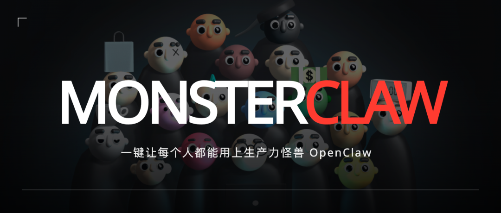
上个月，OpenClaw 在技术圈刷屏了。
有意思的是，已经有人已经用它来研发产品，已经管理自己的公司了。
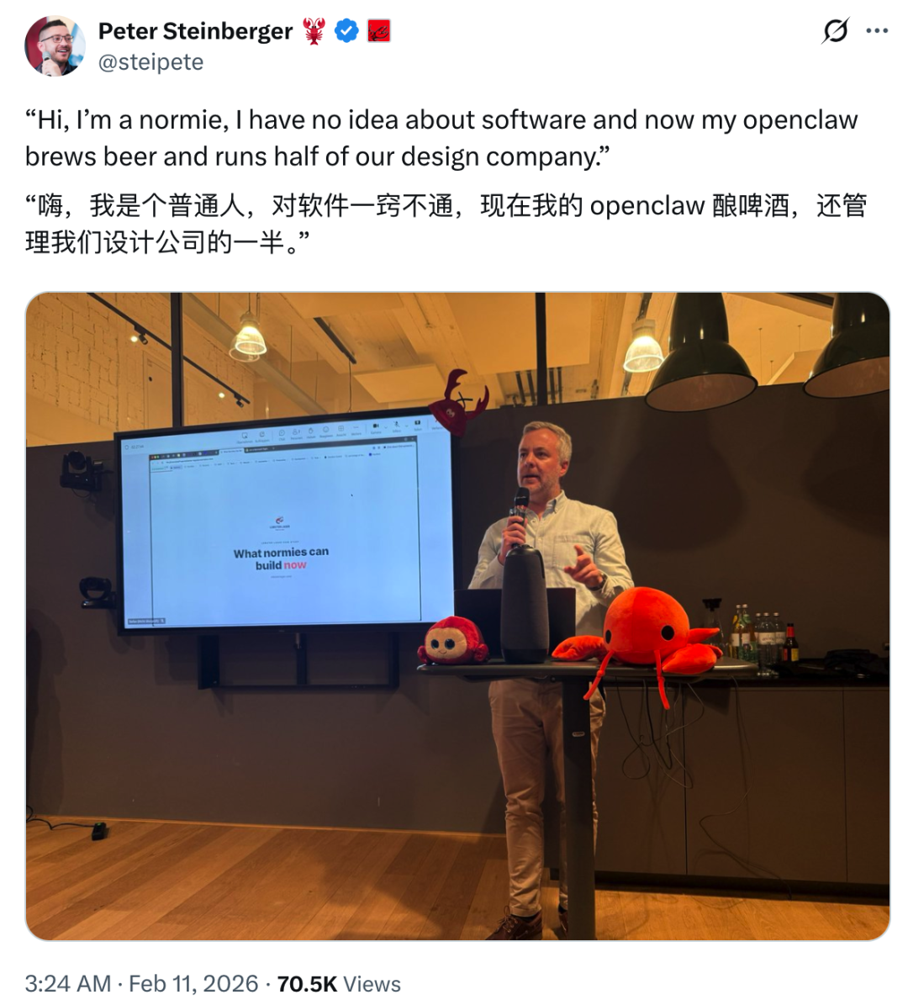
互联网上还涌现出一大批二创项目：ClawTask、ClawBook、ClawCity、ClawLove Agent...
真不愧是一个现象级的产品。
出于害怕落伍的焦虑，我打算今年放假回家，深度使用下 OpenClaw。然而，我刚装好 OpenClaw，就发现这个产品对于技术小白非常不友好，要用上它有两道很高的使用门槛。
第一个门槛就是安装部署。
我身边不少朋友看到 OpenClaw 的演示视频，兴奋了大概三分钟，然后就卡在了安装环节。克隆仓库、配环境变量、装依赖、调 API，每一步都在劝退。有几个做 AI 产品经理的朋友直接问我有没有「傻瓜版」，连他们也不懂怎么部署。
我在部署的时候也找了一些更简单的部署方案，我发现有一些云厂商做了集成方案，但说实话，体验完感觉它们大多只是把 OpenClaw 简单部署了一下，界面套了层壳，核心的使用门槛并没有真正降低。
使用这些云厂商有第二道门槛：你还是得理解 Skill 怎么配置、定时任务怎么写、上下文怎么管理，对非技术用户来说，依然不知道怎么将 OpenClaw 能力发挥出来。
直到最近，我在观猹上注意到一个刚上新的 MonsterClaw 的产品。
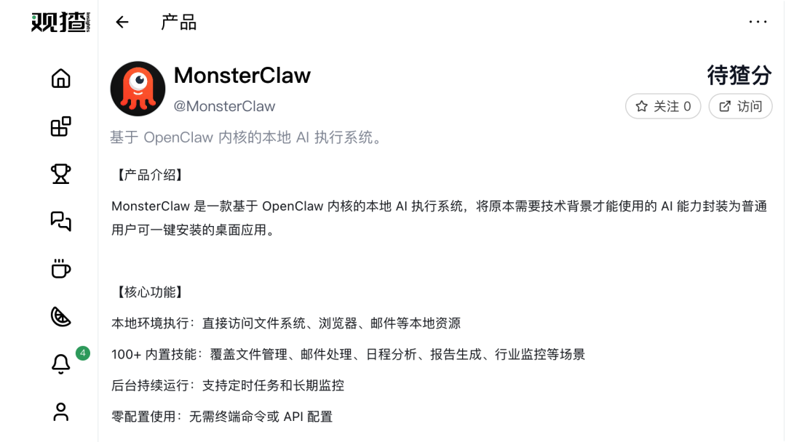
它做了一件看起来简单、实际上很难的事：把 OpenClaw 的全部能力封装成了一个普通人能一键安装的桌面应用。
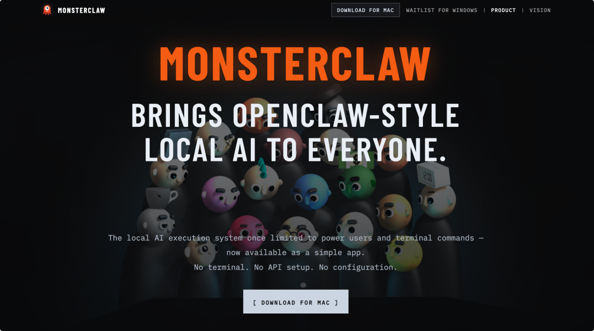
而它下载、安装、打开，没有一行终端命令，甚至接入大模型都不需要 API 配置。
于是，我花了一个下午深度体验了它。
我的结论是：这可能是目前让普通人用上 OpenClaw，门槛最低且发挥最大能力的一个产品。
更夸张的是，前 5000 名注册的直接送了价值 69 元的 GPT 5.2 token！
所以我决定认真测一测，看它到底能不能让 OpenClaw 真正变成普通人的生产力工具。
安装过程非常简单。
我用的是 Mac 电脑，只用三步就完成了：下载 dmg 文件，拖进应用，直接打开。
整个安装的过程不到两分钟。
打开 MonsterClaw 之后，它会先自动帮我们安装一些项目需要的包，然后就可以使用了。
进入的对话界面和我预想的不太一样：我本以为会看到一个简洁的对话框，然后需要自己慢慢摸索功能。
但它比这丰富得多，界面里预设了四个 AI 角色，分别聚焦不同的场景：
Sales 专门盯你的销售管线、跟进节奏和转化信号。
Radar 可以在后台持续扫描行业趋势、异常波动和潜在机会，把最值得关注的信息主动推到你面前。
Health 能追踪你的精力节奏、睡眠和压力趋势，让你的 AI 系统能服务于可持续的个人状态管理。
Finance 可以监控现金流、投资组合变化和风险信号，帮你更快做出清晰的财务决策。
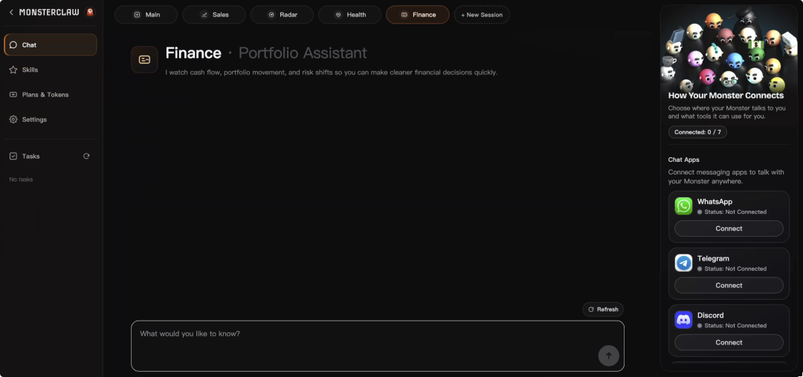
这四个角色的设计思路一看就很明确：覆盖「赚钱」和「生活」两个维度。
再往下看，产品内置了很多 Skill，并且把最适合赚钱和提升生活质量的 Top 10 聚合到了一起，方便用户快速上手。
这些 Skill 涵盖的范围非常广：PDF 处理、Excel 数据清洗与分析、PPT 生成、预算分析、Word 文档协作，甚至还有烹饪助手、天气查询、前端设计和算法艺术。
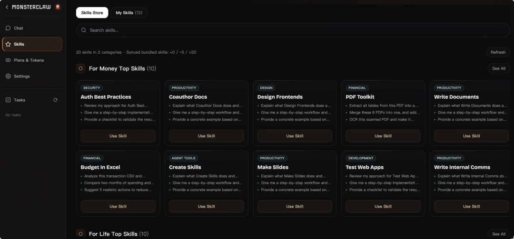
MonsterClaw 其中也内置了定时任务功能。你可以设置 MonsterClaw 按固定周期自动执行某些任务，比如每天早上汇总未读邮件、每周五自动生成工作报告、每半小时扫描一次特定行业的信号变化。
这意味着 MonsterClaw 可以在后台持续运行，持续产出，真正把 OpenClaw 的能力发挥到极致。
我给自己设了一个测试目标，用 MonsterClaw 做两件事：
第一，让它在「赚钱」这件事上产生可感知的实际价值。
第二，让它通过定时任务真正融入我的日常「生活」管理。
作为内容从业者，我对「赚钱」的理解很具体：
找到更多的选题机会，发现更多的合作可能，提高内容的变现效率。
我输入的指令上这些：「帮我监控 AI 领域的新闻，每 30 分钟生成一个 AI 方向的选题，包括一些有趣的产品、谷歌/Anthropic/OpenAI/Grok 最新的动态」
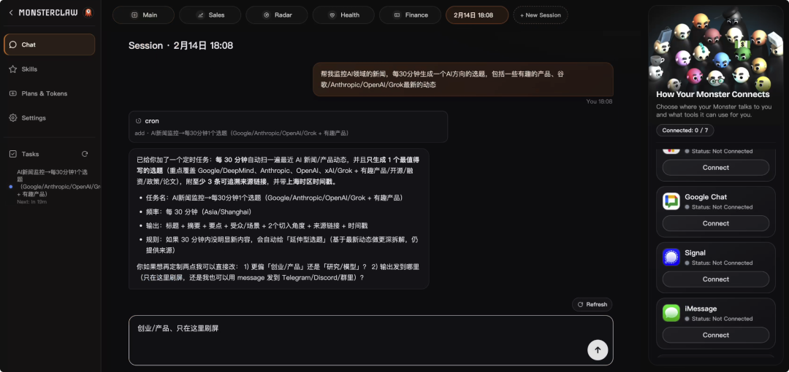
然后，它就开始工作了。
它能自动访问浏览器，抓取信息，然后整理成结构化的摘要。
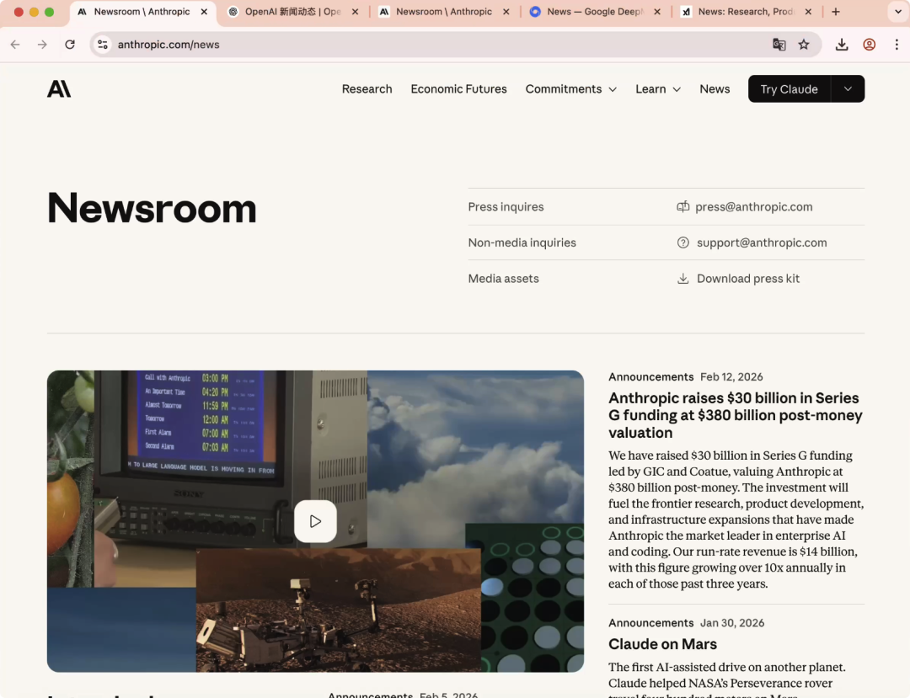
几分钟后，选题出来了。
这一刻，我觉得非常有成就感：当别人过年还在抢各种 AI 公司的红包时，我可以用 AI 帮我赚钱了。
我又换了一个更贴近日常工作的场景。
给的指令是这个：「扫描我备忘录最近三个月的客户会议记录，识别出 5 个最有潜力的合作机会」。
这条指令需要 AI 访问本地文件。
一开始我有点紧张，不确定它能不能正确找到对应的文件夹。但结果它真的找到了。
它分析了我和不同客户的沟通记录，根据对方的预算规模、决策速度、合作意向等维度，给出了一个排序建议。虽然有些判断我不完全认同，但它的分析逻辑非常清晰，而且确实帮我发现了一个我差点忘掉的潜在客户。
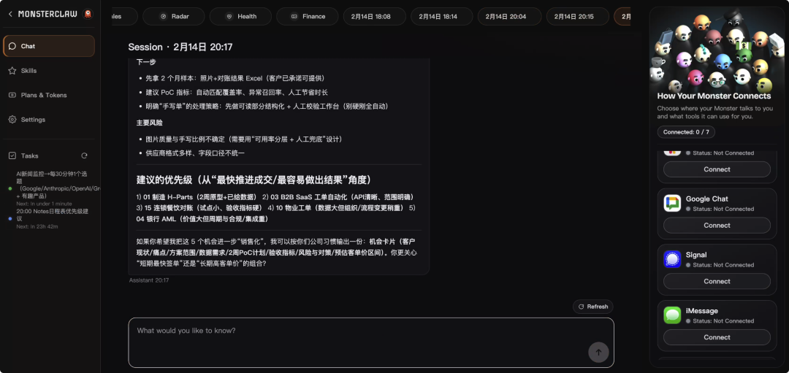
这个体验让我意识到，相比于云厂商的 AI 个人助理，MonsterClaw 的价值不只是「能用 AI」，而是「AI 能用你的数据」。
当用 AI 可以验证帮我「赚钱」，我继续尝试「让 AI 管理我的生活」。
而关于日常生活的管理，我一直有个困扰：每天的待办事项列在备忘录里，但经常忘记看。
我试着用 MonsterClaw 的定时任务功能，设置了一个晚上的提醒机制。
「每天晚上 8 点半，检查我电脑桌面备忘录的日程表，结合我当天的完成情况，生成优先级建议」
等到晚上，我打开电脑，MonsterClaw 已经自动读取了我备忘录里的日程表，它建议我优先处理一些事情，然后把我的日程整理的更合理一点。
这种感觉很奇妙，以前日程管理靠自己记，靠软件提醒。现在多了一个「助手」，它会主动分析你的情况，给出具体建议。
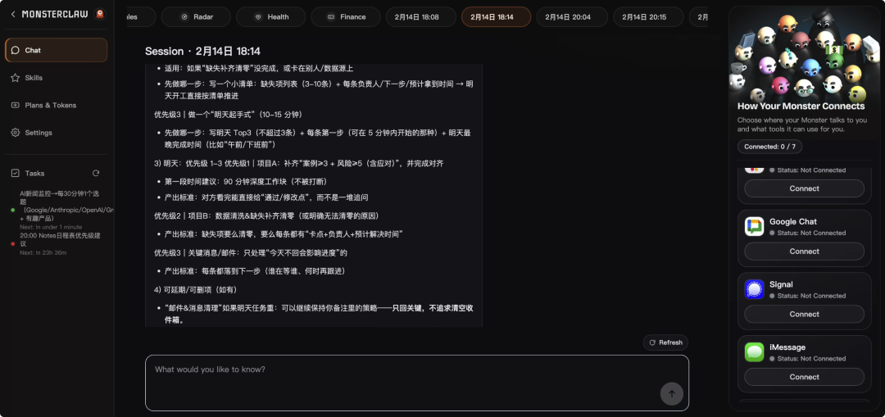
测试完这个，我又测试了 budget-analyzer 这个技能。
我把最近三个月的银行消费账单导出成 CSV 文件，让 AI 分析。
几分钟后，它给出了一份详细的报告：我的消费主要集中在哪些类别，哪些支出有明显的增长趋势，哪些订阅服务其实很久没用了。
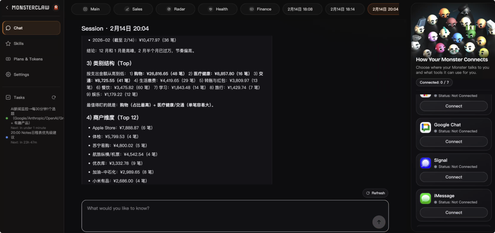
看到它提醒我三个月没打开但每月扣费的 App 后，我把其中用不到的一些都关掉了，帮我省了一笔小钱。
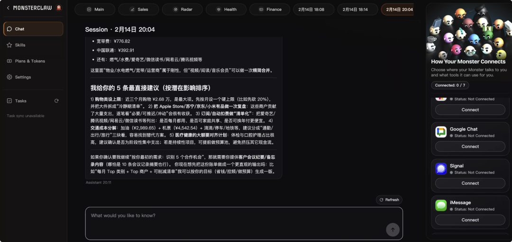
不得不说，这些测试场景都不复杂，但 MonsterClaw 展示了一种新的可能：
AI 不再只是你提问它回答的聊天工具，而是一个可以在后台持续运行、主动帮你处理各种事情的执行系统。
体验到这里，我开始理解 MonsterClaw 为什么反复强调「本地执行」。
现在市面上绝大多数 AI 产品都运行在云端。你把问题发过去，服务器算好了把答案传回来。这个模式处理通用问题足够了，但一旦涉及到个人化的任务，短板立刻暴露出来。
云端 AI 无法访问你本地文件的那些私人化的数据（除非你把数据也传到云端一份，但建立这样的习惯很难），不知道你的邮件写了什么，看不到你的日历安排，更不可能读取你桌面上那个存了三年的项目文件夹。
它能给你建议，但建议是基于通用知识给的，不是基于你的真实处境。
MonsterClaw 运行在你自己的电脑上，能触达你的文件系统、浏览器、邮件和日历。它给出的每一个分析和建议，都建立在你真实数据的基础上。
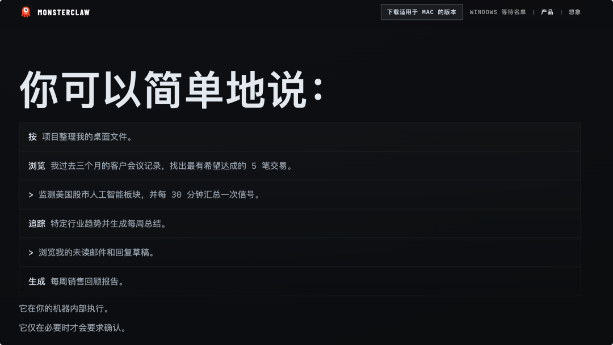
举一个最简单的例子。你让云端 AI 帮你写周报，它只能给你一个格式模板。
而你让 MonsterClaw 写周报，它能直接读取你本周的会议记录、提交的文档和处理过的邮件，然后生成一份有真实内容的报告。一个给你空框架，一个给你成品。
而且 MonsterClaw 支持后台持续运行。你不需要每次想起来才打开它布置任务，设好定时策略之后，它就在后台安静地工作，持续观察、分析、执行。
它更接近于你身边有一个助手在持续帮你盯着事情，而非每次你想到了才去找一个人问。
回过头看整个体验过程，我觉得 MonsterClaw 做对了一件关键的事：
它没有试图重新发明 AI 的底层能力，而是解决了一个更现实的问题：怎么让已有的强大 AI 能力被普通人真正用起来。
OpenClaw 的底层能力毋庸置疑，但它的使用门槛把 90% 的人挡在了外面。那些云厂商的集成方案降低了一部分门槛，用户依然需要具备基本的技术理解。
MonsterClaw 把这道门槛降到了最低：下载、安装、用自然语言告诉它你想做什么。
许多内置 Skill、多个聚焦赚钱和生活的 Agent 角色、灵活的定时任务系统，这些组件覆盖了大量真实的工作和生活场景。
你不需要知道 Skill 在技术层面是什么概念，也不需要理解 Agent 的架构原理，只需要把你的需求说清楚。
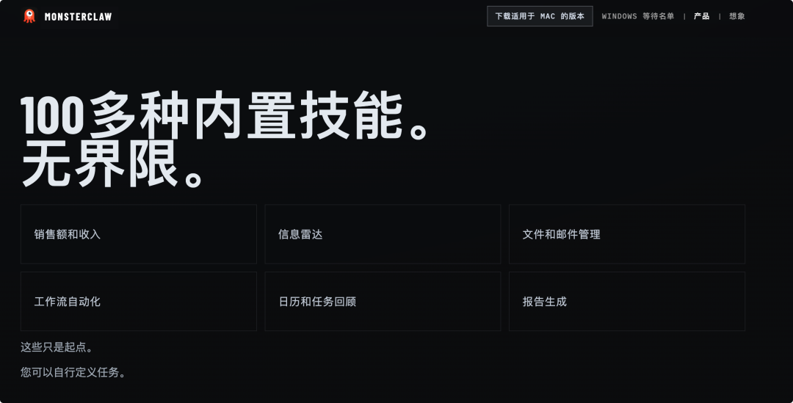
当然，MonsterClaw 目前也有值得完善的地方。比如某些 Skill 在处理复杂任务时精度还有提升空间，多步骤任务的协调偶尔会出现理解偏差，但作为一个刚发布的产品，它展现出的方向感和完成度已经相当扎实。
过去一年，AI 产品经历了几个明显的阶段。
ChatGPT 让人们习惯了和 AI 对话，Cursor 让开发者习惯了让 AI 写代码，Manus 让人看到了 AI 自主完成复杂任务的可能性。
MonsterClaw 正在尝试的是下一步：让 AI 住进你的电脑里，成为你日常的执行者。
从「我问你答」到「我说你做」，再到「你替我盯着」，每一步跨越，AI 能触达的真实任务都在成倍扩大。
如果你曾对 OpenClaw 心动但卡在了技术门槛前面，如果你想让 AI 做一些比「帮我润色一段文案」更有实际价值的事，或者如果你想试试让一个 AI 在后台替你监控行业动态、整理邮件、管理个人目标，那么 MonsterClaw 值得你至少花一个下午去体验。
目前 Mac 可用，Windows 还需要 waitlist。以及前 5000 名用户送将近 100 块钱的 GPT 5.2 Token。
https://monsterclaw.ai
也许你会发现，这是一次让 AI 真正融入生活的方式：
不是它变得更会聊天，而是它开始帮你干活。
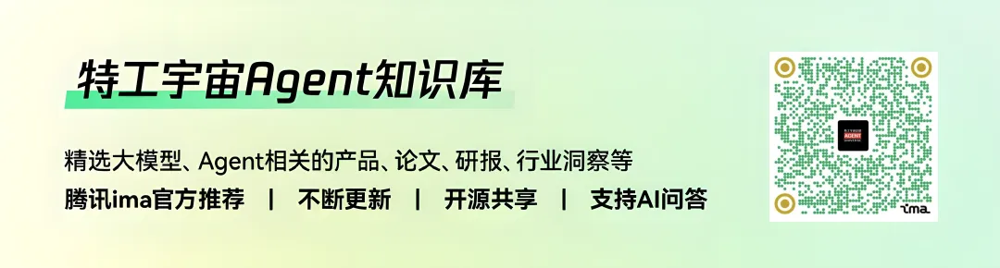